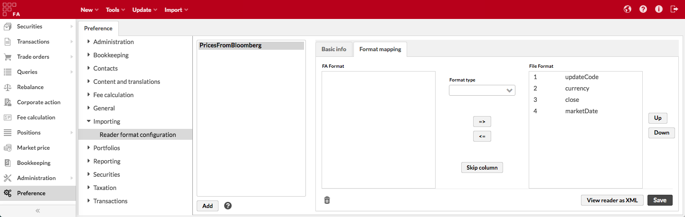

Preferences - Importing
File format
File format preferences provide you with configurability on the import file format.
- Delimiter for CSV files
Delimiter character used in your FA Format CSV files. Enter a single character such as semicolon (;) or a comma (,). By default, FA Format import files are semicolon-separated.
- Encoding to use for importing
CSV file encoding: Windows-1252 or UTF-8. By default, Windows-1252 is used. Choose UTF-8 if your import data includes non-ASCII characters, for example, such letters as "å", "ä", "č", "ē".
Reader format configuration
Reader format configuration defines settings for for importing transactions, trade orders and market prices in custom files. Custom files can have column names and content that differ from the ones used in FA format. However, your custom file must contain a minimum of required columns, see Required fields in custom importers.
To define a custom importer, click Add and fill in the fields in the Basic info and Format mapping tabs.
|  |
Basic info
Enter the basic information about the importer:
- Name
The importer name (shown in the Import window when you upload the file).
- Read from line
A number that sets how many header rows the importer must skip.
- Separator
Separator between the columns, most commonly it is a comma or a semicolon.
- Date format
Date format used in the custom file.
- Decimal point
The decimal point used in the custom file.
- Importer type
Importer type, depending on what information the file contains: Transaction, Market price, or Trade order importer.
Format mapping
The Format mapping tab defines how to map the fields between the FA file format and your custom file. It appears when you fill in the basic info and click Next . Pick up the columns from the list on the left and move them to the right (=>) in the order they appear in your custom file. To remove a column from the File format, click <=. The Skip column button marks a custom file column that the importer must skip. It adds an empty column to the File format field.
Format type
Format type describes the type and format of the column data. Choose one of the following:
Default format type that matches the FA file format. For example, in FA file format transaction type is a string that contains transaction code, such as “B” (buy), “S” (sell), and so on. If your custom file uses the same values, choose the default format type.
MAP_TYPE. Choose this option if the column values don’t match the values used in FA file format.
TRANSACTION_TYPE_MAPPING_EXPR maps transaction types in your custom file to transaction types configured in FA. For example, you can define that transaction type "BUY" corresponds to transaction type "B" configured in FA. To do this, list transaction types in the Value field as "<custom value>=<FA value>". Use the separator you defined in the Basic info. For example, “Sell=S, Buy=B”.
EXT_PORTFOLIO_ID_NAME defines which external portfolio ID is listed in the custom file. A portfolio in FA can have several external IDs that are defined in the Portfolio window, IDs tab (see Portfolio window, IDs tab). To let FA know which external portfolio ID is used, specify ID name in the Value field, for example, "Nordea".
FIXED_VALUE writes a fixed value in the import file column. For example, you can use this option to pass an FX rate if it isn't specified in your custom file. To do this, enter one of the following in the Value field:
A number – for example, if you want to use a constant FX rate and pass it in one of the fields, specify "1.2" (use the decimal point you defined in the Basic info).
The AUTO automatic value that fills in the column cells automatically. For example, for the FX rate column "AUTO" will fetch the transaction day's market price of the transaction's currency. For more information about how to use AUTO, see File formats for importing transactions and trade orders.